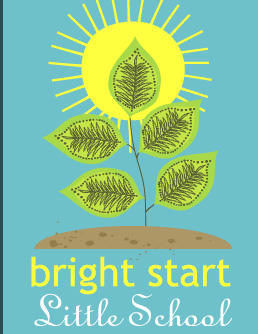

|
At Bright Start Little School, we think children are happiest when they feel valued for who they are as an individual. When others listen to them, seek out their ideas, and allow them to express themselves, they can truly shine brightest. Our environment allows us to work in small groups with the children and we encourage autonomy and self-control. As the children explore the creative curriculum, they develop a feeling of belonging and enjoyment from contributing to the group. We encourage them to not only explore the classroom activities but also help them to flourish in their relationships with each other and feel a part of our school family.
Each month a special theme is explored with books, cooking, gardening, music and movement, puppets, dress up, clay, arts, math, science and free play. In addition, we make sure the children are provided with good nutrition, rest when they need it, and lots of love. All of this helps build the foundation for the children to develop lifelong skills to help them succeed in life.
Here's an example of our typical daily schedule:
| 8-9:00 | Free choice, settling in and breakfast |
| 9–9:30 | Tabletop activities, skill builders and concepts |
| 9:30–9:45 | Circle time with songs, story time and theme of the month |
| 9:45–10:30 | Snack, potty and/or diapers and free choice |
| 10:30–11:45 | Outside exploration and play, small group rotations, and indoor art |
| 11:45–12:00 | Wash hands and prepare for lunch |
| 12:00–12:30 | Lunch |
| 12:30–1:00 | Story time and lunch clean up |
| 1:00–3:00ish | Nap time |
| 3-4:00 | Snack, potty and/or diapers and free choice |
| 4-4:45 | Music and movement, dance, physical activity |
| 4:45-5:15 | Outside play, stories and free choice |
| 5:15 | Prep to go home |
As always our daily schedule is open to the teacher’s interpretation!
|
|